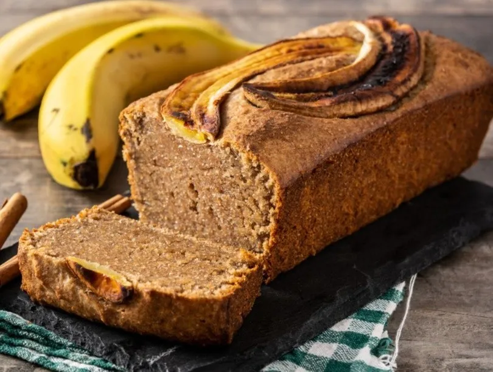
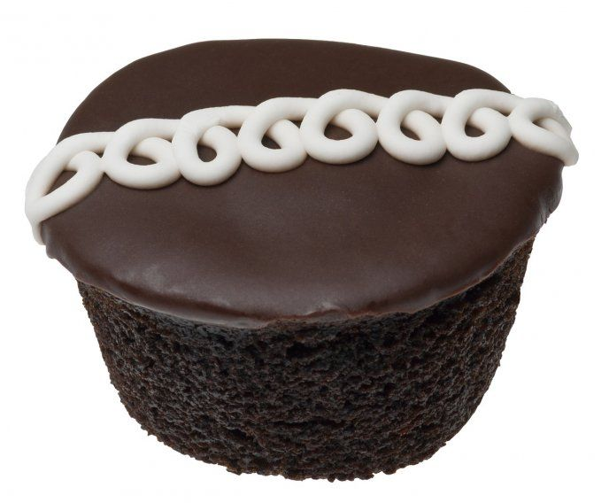

panque de platano
Ingredientes:
- 5 bananas maduras (rodajas)
- 150gms de mantequilla a temperatura ambiente
- 2pz de huevos
- 100ml de leche
- 1/2 de azucar
- 1 1/2 de harina
- 1 cucharada de polvo para hornear (Royal)
Preparación:
- Prepara el horno y los moldes para cupcakes.
- En un tazón mediano, mezcla la harina, el polvo de hornear y la sal. Reserva.
- En otro tazón mediano, bate la mantequilla y el azúcar hasta que estén suaves y cremosos. Agrega los huevos, uno a la vez, y el extracto de vainilla. Bate bien.
- Agrega la mezcla de harina en tres partes, alternando con la leche, comenzando y terminando con la mezcla de harina. Bate bien después de cada adición.
- Divide la masa entre los moldes para cupcakes, llenándolos aproximadamente 2/3 de su capacidad.
- Hornea los cupcakes durante 18-20 minutos, o hasta que un palillo insertado en el centro salga limpio.
- Deja enfriar los cupcakes antes de decorarlos.
pinguinos
Ingredientes:
crema de relleno
preparacion: